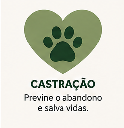
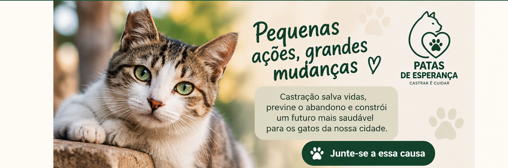

Castração
Campanhas para reduzir o abandono e promover o bem-estar animal.


A Patas de Esperança é uma ONG fictícia dedicada à proteção de gatos de rua e comunitários.
Nosso trabalho busca ampliar o acesso à castração responsável, apoiar cuidadores e incentivar a comunidade a participar da proteção animal.

Campanhas para reduzir o abandono e promover o bem-estar animal.

Apoio aos animais que precisam de acolhimento durante o atendimento.

Contribuições ajudam a manter as ações e os cuidados.
E-mail: contato@patasdeesperanca.org.br
Telefone: (11) 99999-9999
Localização: São Paulo - SP